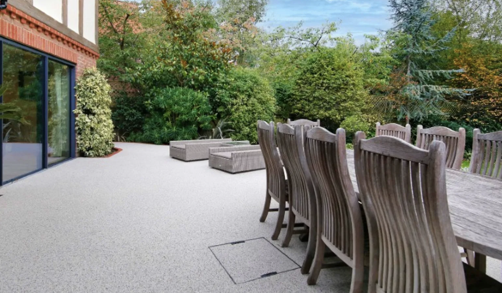
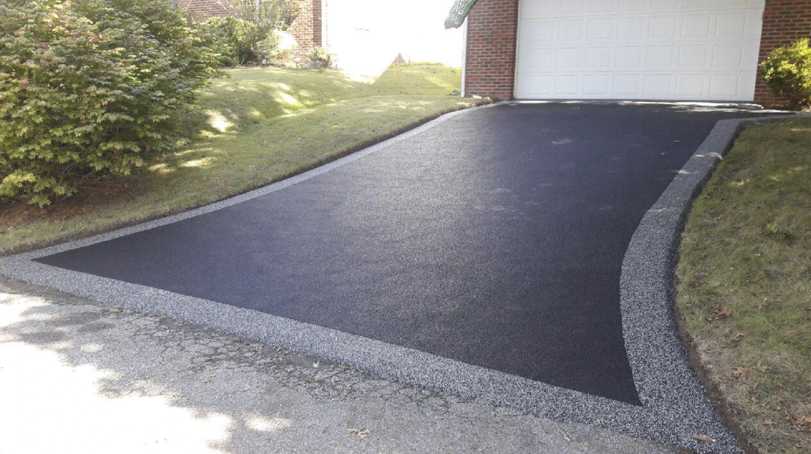
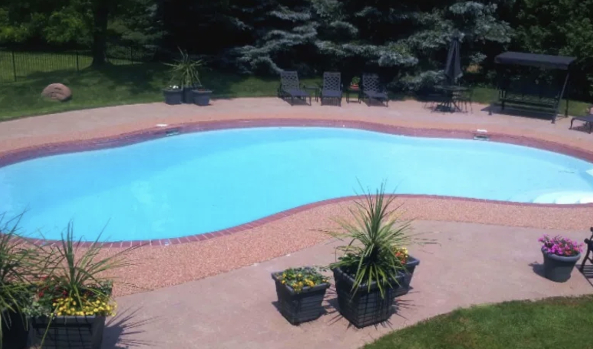

No full demolition required
Rubber Stone and Vuba Stone can often be installed over existing concrete, asphalt, wood, or tile, helping avoid costly tear-outs and lengthy replacement projects.
OUR SERVICES
Restore cracked, worn, or aging surfaces with Rubber Stone and Vuba Stone resurfacing in Metro Atlanta. Structures Inc. installs durable, slip-resistant finishes that transform existing concrete, asphalt, wood, and tile without the cost of full replacement.
These systems are ideal for patios, pool decks, driveways, walkways, and outdoor living spaces where clients want a cleaner look, better traction, and long-term performance with less disruption than demolition and rebuild work.
Our Rubber Stone and Vuba Stone systems upgrade damaged or outdated surfaces while improving appearance, traction, comfort, and long-term durability for residential and commercial properties.



DETAILED OVERVIEW
Structures Inc. installs two advanced resurfacing systems designed to repair and upgrade existing concrete and hard surfaces without full replacement. This makes Rubber Stone and Vuba Stone an attractive option for property owners who want a major visual and functional upgrade without tearing everything out.
Rubber Stone is a flexible resurfacing system made from recycled rubber and resin. It creates a textured, slip-resistant, more comfortable walking surface that works especially well for pool decks, patios, walkways, steps, and other outdoor areas where safety and comfort matter.
Vuba Stone is a resin-bound natural stone system that creates a smooth, decorative finish with a clean, high-end aggregate appearance. It is often used for driveways, patios, walkways, and outdoor living spaces where clients want both durability and strong curb appeal.
Both systems can be installed over existing concrete, asphalt, wood, or tile, allowing surfaces to be restored quickly while dramatically improving appearance, usability, and long-term performance.
Structures Inc. is the exclusive Metro Atlanta installer for Rubber Stone and Vuba Stone systems. These seamless resurfacing solutions are ideal for patios, pool decks, driveways, walkways, entry areas, and commercial spaces that need a durable finish with a more refined appearance.
For additional product details, project inspiration, and installation information, you can also visit our dedicated Rubber Stone website.
Visit the Rubberstone WebsiteWHY IT MATTERS
Rubber Stone and Vuba Stone can often be installed over existing concrete, asphalt, wood, or tile, helping avoid costly tear-outs and lengthy replacement projects.
These systems improve traction and help create safer, more comfortable surfaces for pool decks, patios, walkways, and outdoor gathering spaces.
Rubber Stone and Vuba Stone are built for long-term performance while giving worn or dated surfaces a cleaner, more modern, more finished look.
START YOUR PROJECT
Contact Structures Inc. to ask about Rubber Stone and Vuba Stone resurfacing for your patio, pool deck, driveway, walkway, or outdoor living area.
Contact Us